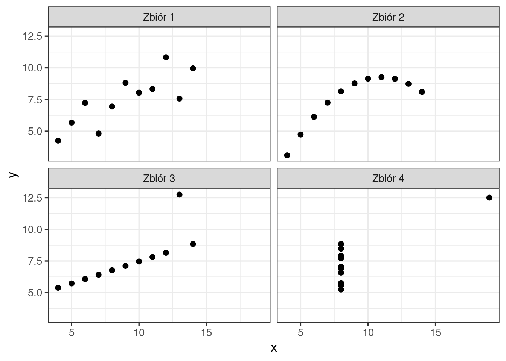
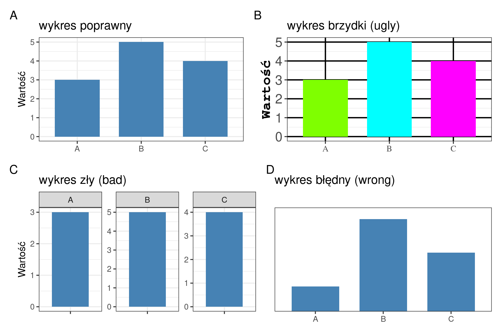
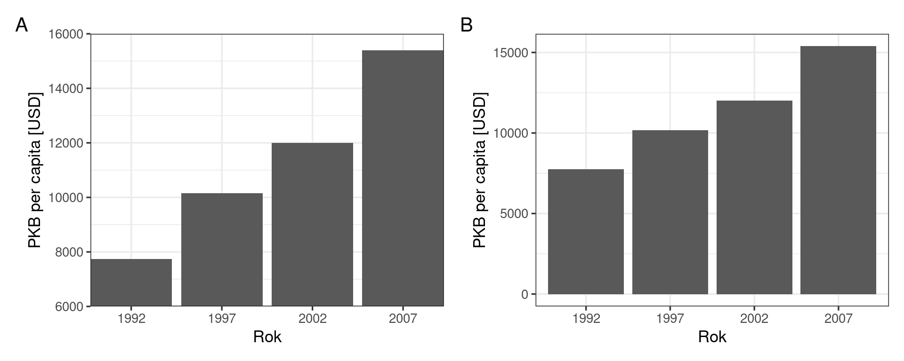
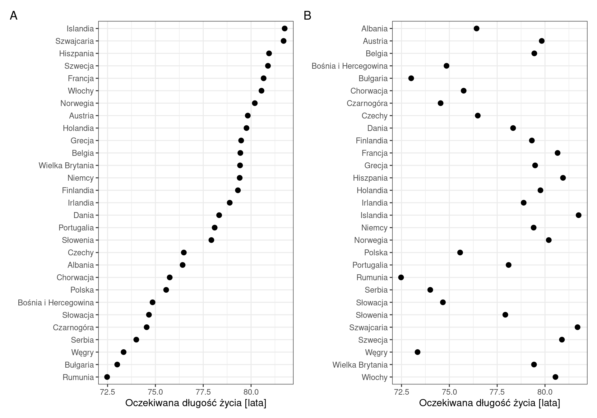
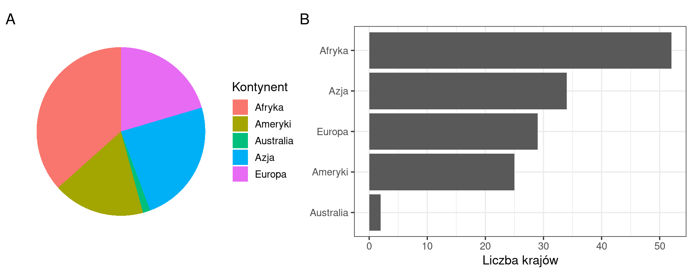
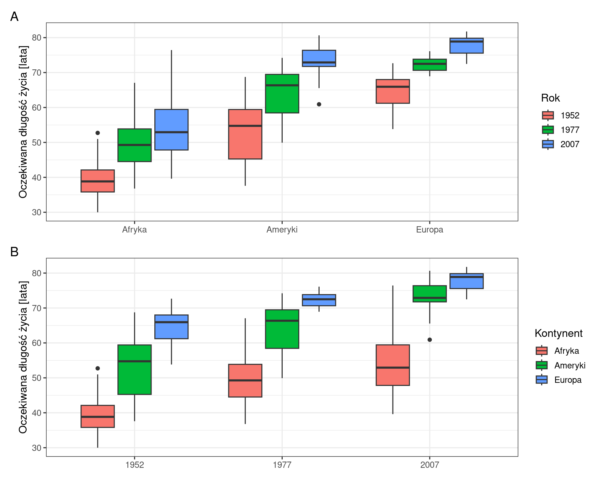
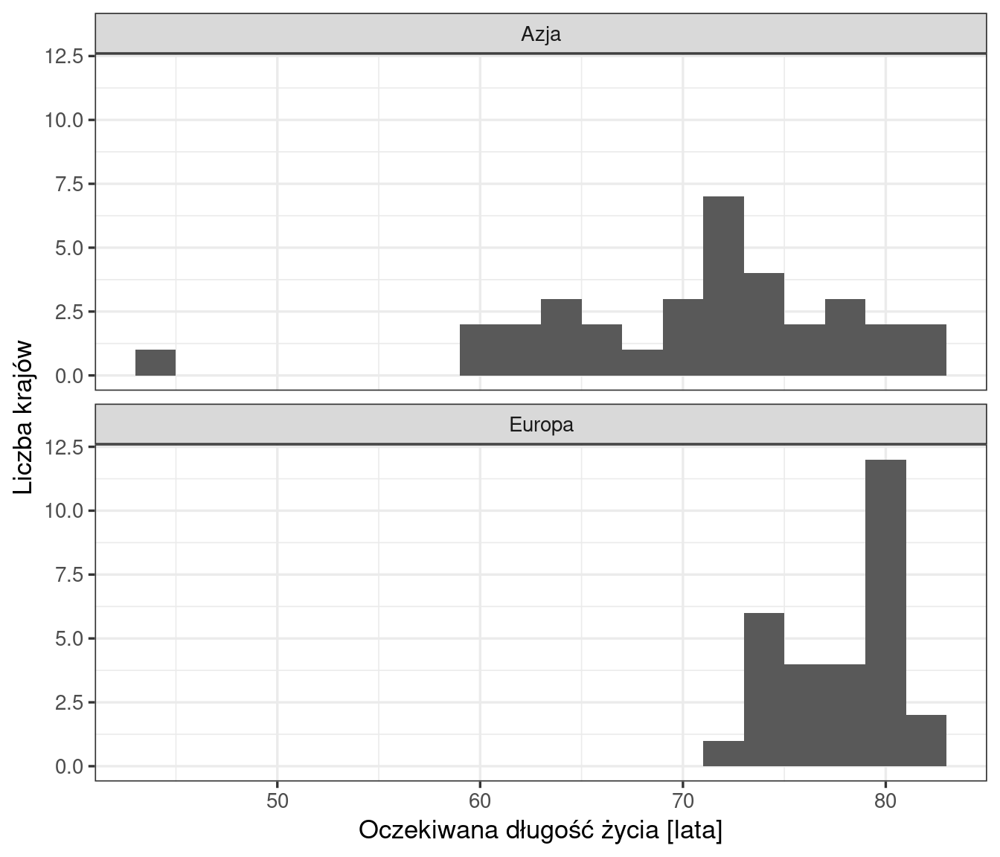
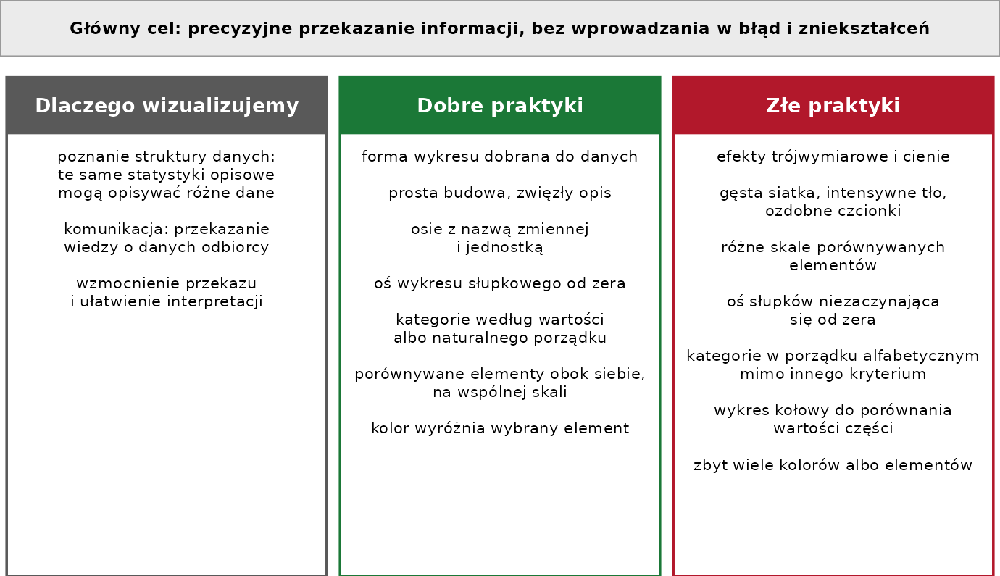

Kod: wczytanie pakietów i danych
library(tidyverse)
library(patchwork)
dane <- read.csv("dane/gapminder_regions.csv", encoding = "UTF-8") |>
mutate(across(where(is.character), as.factor))
dane2007 <- dane |>
filter(year == 2007)Rozdział przedstawia cele wizualizacji danych i zasady dobrej prezentacji. Przykłady wykorzystują dane Gapminder (Sekcja 3.1), z wyjątkiem kwartetu Anscombe’a, dostępnego w R w pakiecie podstawowym datasets. Kod tworzący ryciny jest zwinięty — rozwija się go przyciskiem Kod nad ryciną.
library(tidyverse)
library(patchwork)
dane <- read.csv("dane/gapminder_regions.csv", encoding = "UTF-8") |>
mutate(across(where(is.character), as.factor))
dane2007 <- dane |>
filter(year == 2007)Kwartet Anscombe’a (Anscombe, 1973) to cztery zbiory danych, każdy złożony z 11 par wartości \(x\) i \(y\). Wszystkie cztery zbiory mają te same statystyki opisowe (Tabela 12.1).
# zbiory kwartetu w postaci długiej: kolumny zbior, x, y
kwartet <- datasets::anscombe |>
pivot_longer(everything(), cols_vary = "slowest",
names_to = c(".value", "zbior"), names_pattern = "(.)(.)") |>
mutate(zbior = paste("Zbiór", zbior)) # nazwy zbiorów: Zbiór 1 … Zbiór 4
kwartet |>
group_by(zbior) |>
summarise(srednia_x = mean(x), odch_std_x = sd(x),
srednia_y = mean(y), odch_std_y = sd(y),
korelacja = cor(x, y)) |>
knitr::kable(digits = 2,
col.names = c("Zbiór", "Średnia x", "Odch. std. x",
"Średnia y", "Odch. std. y", "Współczynnik korelacji"))| Zbiór | Średnia x | Odch. std. x | Średnia y | Odch. std. y | Współczynnik korelacji |
|---|---|---|---|---|---|
| Zbiór 1 | 9 | 3.32 | 7.5 | 2.03 | 0.82 |
| Zbiór 2 | 9 | 3.32 | 7.5 | 2.03 | 0.82 |
| Zbiór 3 | 9 | 3.32 | 7.5 | 2.03 | 0.82 |
| Zbiór 4 | 9 | 3.32 | 7.5 | 2.03 | 0.82 |
Wykresy rozrzutu pokazują, że zbiory różnią się od siebie (Rycina 12.1): tylko w pierwszym zbiorze zależność ma postać liniową z rozproszeniem punktów; w drugim zależność jest nieliniowa, a w trzecim i czwartym wartość współczynnika korelacji wyznacza jedna obserwacja odstająca.
ggplot(kwartet, aes(x = x, y = y)) +
geom_point(size = 2) +
facet_wrap(~ zbior) +
theme_bw(base_size = 13)
Te same wartości statystyk mogą opisywać dane o różnej strukturze. Dlatego analiza danych obejmuje zarówno obliczenie statystyk, jak i wizualizację.
Większość wizualizacji danych służy komunikacji: autor zna zbiór danych i przekazuje tę wiedzę odbiorcy. Głównym celem jest precyzyjne przekazanie informacji, bez wprowadzania w błąd i zniekształceń. Dobra prezentacja wizualna wzmacnia przekaz, a wykres powinien być estetyczny.
Według Tuftego (1983) dobra prezentacja graficzna:
Udoskonalając wykres, należy zastanowić się, co można z niego usunąć, a nie co można dodać: doskonałość osiąga się wtedy, gdy nie ma już nic do usunięcia (de Saint-Exupéry, 1939). Elementy, które nie przedstawiają danych — efekty trójwymiarowe, cienie, intensywne tło, gęsta siatka, ozdobne czcionki — utrudniają odczytanie wartości. Przykłady usuwania zbędnych elementów z wykresu przedstawiają:
Wilke (2019, rozdz. 1) rozróżnia wykresy:
Rycina 12.2 przedstawia te rodzaje na przykładzie trzech wartości: A = 3, B = 5 i C = 4. Na wykresie A wartości odczytuje się poprawnie. Wykres B przedstawia te same wartości z wadami estetycznymi. Na wykresie C każdy słupek ma własną skalę osi y, dlatego słupki mają tę samą wysokość, choć wartości się różnią. Na wykresie D brakuje osi y, a oś nie zaczyna się od zera: wartości nie można odczytać, a proporcje między słupkami są zniekształcone.
przyklad <- tibble(kategoria = c("A", "B", "C"), wartosc = c(3, 5, 4))
p_poprawny <- ggplot(przyklad, aes(x = kategoria, y = wartosc)) +
geom_col(fill = "steelblue", width = 0.7) +
labs(x = NULL, y = "Wartość", title = "wykres poprawny") +
theme_bw(base_size = 13)
p_brzydki <- ggplot(przyklad, aes(x = kategoria, y = wartosc, fill = kategoria)) +
geom_col(width = 0.7) +
scale_fill_manual(values = c("chartreuse", "cyan", "magenta"), guide = "none") +
labs(x = NULL, y = "Wartość", title = "wykres brzydki (ugly)") +
theme_bw(base_size = 13) +
theme(panel.grid.major = element_line(colour = "black", linewidth = 0.8), # wyraźna siatka
axis.title.y = element_text(family = "mono", face = "bold", size = 18),
axis.text.x = element_text(family = "serif", size = 11),
axis.text.y = element_text(size = 17))
p_zly <- ggplot(przyklad, aes(x = "", y = wartosc)) +
geom_col(fill = "steelblue", width = 0.7) +
facet_wrap(~ kategoria, scales = "free_y") + # każdy panel ma własną skalę osi y
labs(x = NULL, y = "Wartość", title = "wykres zły (bad)") +
theme_bw(base_size = 13)
p_bledny <- ggplot(przyklad, aes(x = kategoria, y = wartosc)) +
geom_col(fill = "steelblue", width = 0.7) +
coord_cartesian(ylim = c(2.4, 5.2)) + # oś y nie zaczyna się od zera
labs(x = NULL, y = NULL, title = "wykres błędny (wrong)") +
theme_bw(base_size = 13) +
theme(axis.text.y = element_blank(), axis.ticks.y = element_blank(), # brak opisu osi y
panel.grid = element_blank())
(p_poprawny | p_brzydki) / (p_zly | p_bledny) + plot_annotation(tag_levels = "A")
Healy (2026, rozdz. 1) wskazuje trzy źródła wad wykresu: zły gust (ang. bad taste), błędne dane (bad data) i problemy z percepcją (bad perception). Przegląd typowych błędów zawiera także Li (2022). Oba źródła są dostępne w internecie:
Na wykresie słupkowym wartość odczytuje się z długości słupka. Oś, która nie zaczyna się od zera, skraca słupki o tę samą wielkość i zmienia proporcje między nimi (Rycina 12.3).
polska <- dane |>
filter(kraj == "Polska", year > 1990)
p_obcieta <- ggplot(polska, aes(x = factor(year), y = gdpPercap)) +
geom_col() +
coord_cartesian(ylim = c(6000, 16000), expand = FALSE) + # oś y od 6000
labs(x = "Rok", y = "PKB per capita [USD]") +
theme_bw(base_size = 13)
p_zero <- ggplot(polska, aes(x = factor(year), y = gdpPercap)) +
geom_col() +
labs(x = "Rok", y = "PKB per capita [USD]") +
theme_bw(base_size = 13)
p_obcieta + p_zero + plot_annotation(tag_levels = "A")
Na rycinie 12.3 A słupek z 2007 roku jest ponad pięciokrotnie dłuższy od słupka z 1992 roku, choć PKB per capita wzrósł niemal dwukrotnie (z 7739 do 15 390 USD) — co pokazuje Rycina 12.3 B.
Długość słupka przedstawia wartość, dlatego oś wykresu słupkowego musi zaczynać się od zera.
Kategorie nieuporządkowane porządkuje się na wykresie według wartości, a nie alfabetycznie. Kategorie o naturalnym porządku, np. grupy dochodowe albo miesiące, zachowują ten porządek. Uporządkowanie według wartości pozwala odczytać ranking i porównać sąsiednie kategorie (Rycina 12.4).
europa2007 <- dane2007 |>
filter(kontynent == "Europa")
p_wartosc <- ggplot(europa2007, aes(x = lifeExp, y = fct_reorder(kraj, lifeExp))) +
geom_point(size = 2.5) +
labs(x = "Oczekiwana długość życia [lata]", y = NULL) +
theme_bw(base_size = 12)
p_alfabet <- ggplot(europa2007, aes(x = lifeExp, y = fct_rev(kraj))) +
geom_point(size = 2.5) +
labs(x = "Oczekiwana długość życia [lata]", y = NULL) +
theme_bw(base_size = 12)
p_wartosc + p_alfabet + plot_annotation(tag_levels = "A")
Na wykresie kołowym wartości odczytuje się z kątów i pól wycinków, na wykresie słupkowym — z długości słupków na wspólnej osi. Różnice długości słupków odczytuje się łatwiej niż różnice kątów (Rycina 12.5). Dyskusję wad i zalet wykresu kołowego przedstawiają Kosara (2010) oraz Lima (2018).
kontynenty2007 <- dane2007 |>
group_by(kontynent) |>
summarise(liczba = n())
p_kolowy <- ggplot(kontynenty2007, aes(x = "", y = liczba, fill = kontynent)) +
geom_col() +
coord_polar(theta = "y") + # układ biegunowy: wykres kołowy
labs(fill = "Kontynent") +
theme_void(base_size = 13)
p_slupkowy <- ggplot(kontynenty2007, aes(x = liczba, y = fct_reorder(kontynent, liczba))) +
geom_col() +
labs(x = "Liczba krajów", y = NULL) +
theme_bw(base_size = 13)
p_kolowy + p_slupkowy + plot_annotation(tag_levels = "A")
Układ wykresu określa, które wartości odbiorca porównuje najłatwiej: wartości położone obok siebie, na wspólnej osi. Te same dane można ułożyć tak, aby porównywać lata w obrębie kontynentu albo kontynenty w obrębie roku (Rycina 12.6).
wybrane <- dane |>
filter(kontynent %in% c("Afryka", "Ameryki", "Europa"),
year %in% c(1952, 1977, 2007))
p_lata <- ggplot(wybrane, aes(x = kontynent, y = lifeExp, fill = factor(year))) +
geom_boxplot() +
labs(x = NULL, y = "Oczekiwana długość życia [lata]", fill = "Rok") +
theme_bw(base_size = 13)
p_kontynenty <- ggplot(wybrane, aes(x = factor(year), y = lifeExp, fill = kontynent)) +
geom_boxplot() +
labs(x = NULL, y = "Oczekiwana długość życia [lata]", fill = "Kontynent") +
theme_bw(base_size = 13)
p_lata / p_kontynenty + plot_annotation(tag_levels = "A")
Porównywane wykresy mają wspólną skalę osi. Wykresy o różnych skalach sprawiają, że rozkłady o różnym położeniu wyglądają podobnie. Rozkłady jednej zmiennej porównuje się najłatwiej, gdy wykresy znajdują się jeden pod drugim, ze wspólną osią x (Rycina 12.7).
dane2007 |>
filter(kontynent %in% c("Europa", "Azja")) |>
ggplot(aes(x = lifeExp)) +
geom_histogram(binwidth = 2) +
facet_wrap(~ kontynent, nrow = 2) + # panele jeden pod drugim
labs(x = "Oczekiwana długość życia [lata]", y = "Liczba krajów") +
theme_bw(base_size = 13)
facet_wrap() tworzy panele ze wspólną skalą osi; argument nrow = 2 układa panele jeden pod drugim. Przykłady porównań i zasady układu wykresów przedstawia prezentacja Bromana (2018).
Wilke (2019, rozdz. 26) zaleca unikanie wykresów, na których trzeci wymiar nie przedstawia żadnych danych i służy wyłącznie ozdobie. Rzutowanie obiektów trójwymiarowych na płaszczyznę zniekształca dane, a wzrok koryguje to zniekształcenie tylko częściowo: na obróconym wykresie kołowym wycinek z przodu wydaje się większy niż w rzeczywistości, a kolumny trójwymiarowego wykresu słupkowego wydają się niższe. Publikacja GUS także nie zaleca stosowania wykresów trójwymiarowych (GUS, 2014).
Rycina 12.8 podsumowuje rozdział: cel wizualizacji, dobre praktyki i praktyki, których należy unikać. Tabela 12.2 przypisuje najważniejsze z nich do sekcji rozdziału. Szczegółowe zasady opracowywania wykresów, wraz z warunkami, wyjątkami i źródłami, zawiera Załącznik C.

| Dobra praktyka | Praktyka, której należy unikać | Sekcja |
|---|---|---|
| wykonanie wykresu obok obliczenia statystyk | ocena danych wyłącznie na podstawie statystyk | Sekcja 12.1 |
| usunięcie elementów, które nie przedstawiają danych | efekty ozdobne, gęsta siatka, intensywne tło | Sekcja 12.3 |
| czytelne osie, które pozwalają odczytać wartość | brak osi, różne skale dla porównywanych elementów | Sekcja 12.4 |
| oś wykresu słupkowego od zera | oś słupków rozpoczynająca się od innej wartości | Sekcja 12.5 |
| kategorie według wartości albo naturalnego porządku | porządek alfabetyczny bez uzasadnienia | Sekcja 12.6 |
| wykres słupkowy do porównania wartości | wykres kołowy do porównania wartości części | Sekcja 12.7 |
| porównywane wartości obok siebie | porównywane wartości w odległych częściach wykresu | Sekcja 12.8 |
| wspólna skala przy porównaniu | różne skale porównywanych wykresów | Sekcja 12.9 |
| wykres dwuwymiarowy | wykres trójwymiarowy | Sekcja 12.10 |
Jeżeli czytelność wykresu wymaga opisania wartości etykietami przy każdym elemencie, należy rozważyć inną formę wykresu. Dobór wykresu do pytania badawczego opisuje Rozdział 17.
Lista zawiera podstawowe warunki poprawnej prezentacji danych. Wykres powinien spełniać każdy z nich albo mieć uzasadnienie odstępstwa.